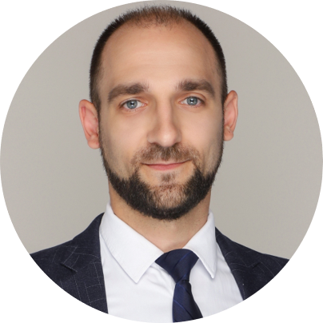

|  |
Iurii GaidaienkoSenior Research Scientist, PhD in Electrical Machines and Apparatus.I'm a Senior Researcher at "Yalong Intelligent Group Co. Ltd.", China. My research focuses on innovative structural synthesis of hybrid electromechanical structures, multi-coordinate electromechanical energy converters, multi-winding electrical machines and inductors, linear motors, linear motor modules, etc. I'm a visiting Professor of Wenzhou Technical College". In 2018, I was selected as one of the "Overseas High Level Talents". |
| Dates | Work | |
|---|---|---|
| 2018 May - present | Yalong Intelligent Equipment Group Co. Ltd., Wenzhou, Zhejiang (China) Senior Research Scientist. | |
| 2017 Oct. - 2018 May | Yalong Intelligent Equipment Group Co. Ltd., Wenzhou, Zhejiang (China) Research Scientist. | |
| 2017 Jul. - 2017 Oct. | National Technical University of Ukraine ‘Igor Sikorsky Kyiv polytechnic institute’, (Ukraine), Department of Electromechanics. Senior Lecturer. | |
| 2012 Dec. - 2017 Jun. | National Technical University of Ukraine ‘Igor Sikorsky Kyiv polytechnic institute’, (Ukraine), Department of Electromechanics. Assistant Lecturer. |
| PLC programming | ⭐⭐⭐⭐⭐ | Servo programming | ⭐⭐⭐⭐⭐ | PPT | ⭐⭐⭐⭐⭐ |
| HMI programming | ⭐⭐⭐⭐⭐ | Solidworks | ⭐⭐⭐⭐⭐ | Pycharm | ⭐⭐⭐⭐ |
| Electromechanics | ⭐⭐⭐⭐⭐ | Python programming | ⭐⭐⭐⭐ | VSCode | ⭐⭐⭐⭐ |
| Ukrainian | ⭐⭐⭐⭐⭐ native; | English | ⭐⭐⭐⭐ B2, IELTS 6.5; |
| Russian | ⭐⭐⭐⭐⭐ native; | Chinese | ⭐⭐⭐ HSK3-4 (intermediate B1) |